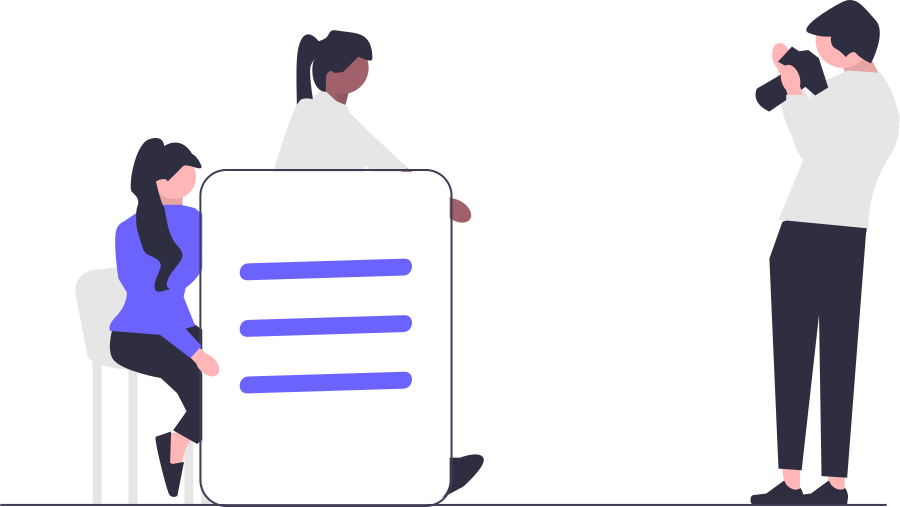

<div class="w-screen h-screen sm:bg-[#f9fafc] bg-white relative">
  <div class="sm:absolute sm:w-full sm:h-full sm:block hidden">
    
    
  </div>
  <div class="relative max-w-[400px] m-auto">
    <header class="pt-6 pb-2 flex justify-center">
      
    </header>
    <router-outlet/>
    <hr class="solid mt-12 mb-9">
    <div class="flex justify-center">
      
    </div>
  </div>
</div>
